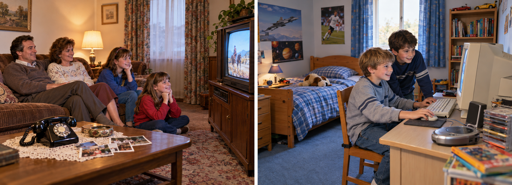
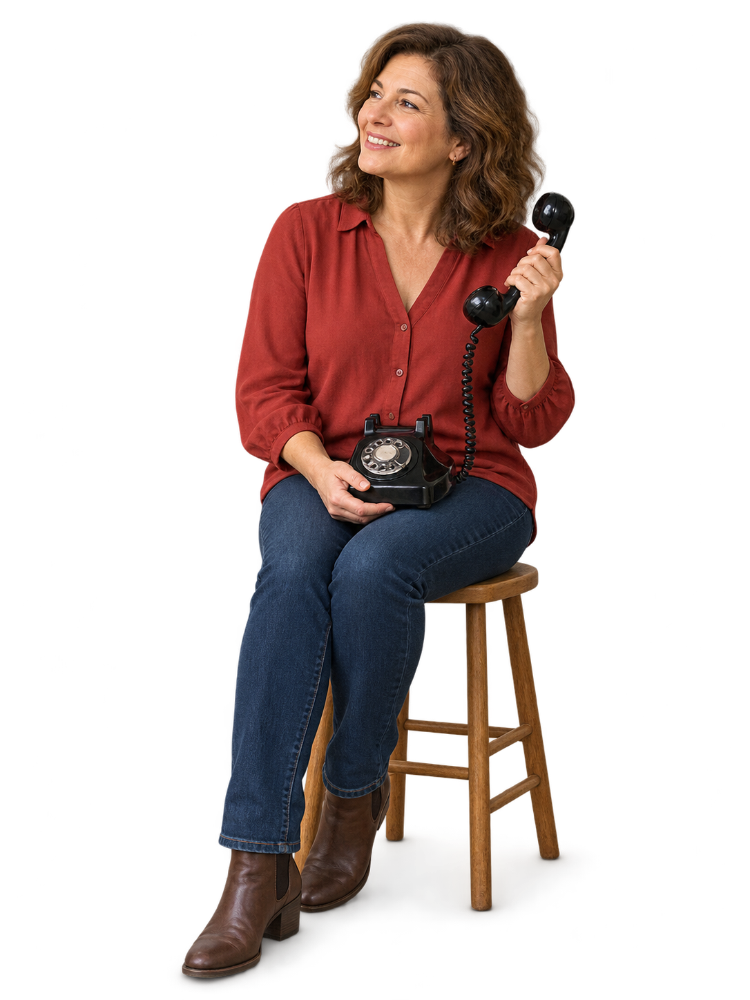

Unit 7 · Back in the day
Lesson7A
When I was little…
Talk about childhoodwas / were
1
Look at the photos. A living room or a bedroom?

2
♪ 7.1 Listen and repeat. NEW WORDS
yesterdaylast nightlast weekendlast year
Example: Today is Monday. This year is 2026.
Yesterday
Sunday
Last night
Sunday night
Last weekend
Saturday and Sunday
Last year
2025
3
♪ 7.2 Read and listen. Who was eight: Helen / Owen?
At home after school
1985
How old were you in 1985?
I was nine. Our phone was in the living room. My sister and I were at home after school. We weren't online. Our photos were on paper.
2005
What about 2005?
I was eight. My computer was in my bedroom. My cousin was my best friend. We were usually in my room after school. We weren't outside.

4
Look at the interviews. Choose and circle.
- Helen: I was / were nine.
- We weren’t means we were not / we was not.
- In Were you online?, were is before / after you.